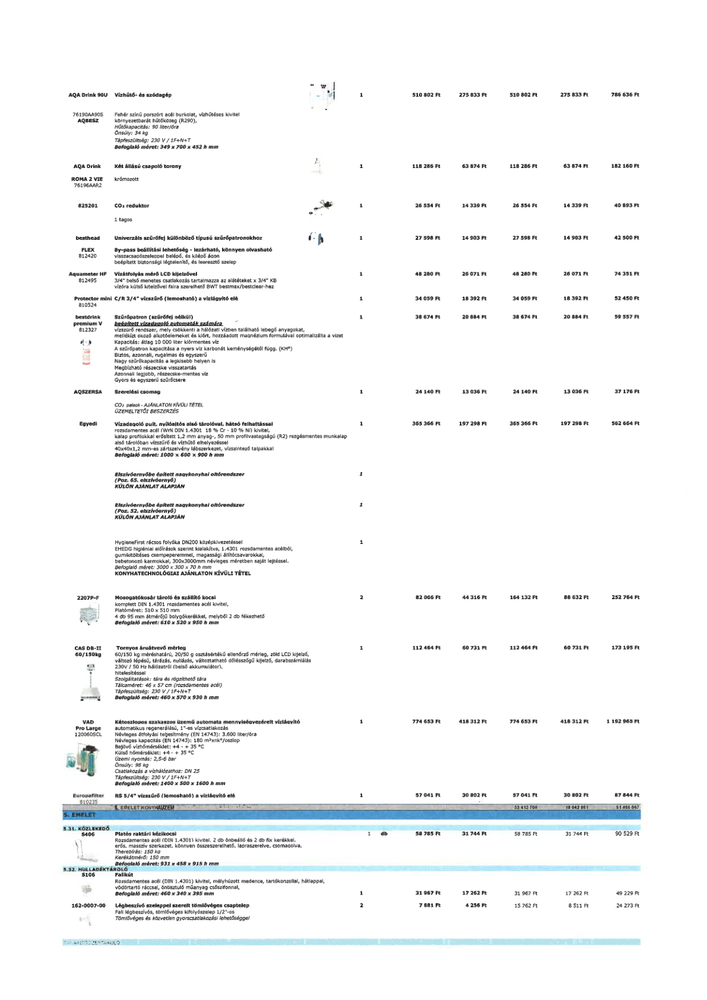

| Tétel | Menny. | Egys. | Anyag e.ár (net HUF) | Díj e.ár (net HUF) | Anyag összesen (net HUF) | Díj összesen (net HUF) | Anyag+Díj összesen (net HUF) |
|---|---|---|---|---|---|---|---|
| AQA Drink 90U 76190AA905 AQBESZ Vízhűtő- és szódagép | 1 | NaN | 510 802 | 275 833 | 510 802 | 275 833 | 786 636 |
| AQA Drink ROMA 2 VIE 76196AAR2 Két állású csapoló torony | 1 | NaN | 118 286 | 63 874 | 118 286 | 63 874 | 182 160 |
| 825201 CO2 reduktor | 1 | NaN | 26 554 | 14 339 | 26 554 | 14 339 | 40 893 |
| besthead FLEX 812420 Univerzális szűrőfej különböző típusú szűrőpatronokhoz | 1 | NaN | 27 598 | 14 903 | 27 598 | 14 903 | 42 500 |
| Aquameter HP 812495 Vízátfolyás mérő LCD kijelzővel | 1 | NaN | 48 280 | 26 071 | 48 280 | 26 071 | 74 351 |
| Protector mini C/R 3/4" vízszűrő (lemosható) a vízlágyító elé 810524 | 1 | NaN | 34 059 | 18 392 | 34 059 | 18 392 | 52 450 |
| bestdrink premium V 812327 Szűrőpatron (szűrőfej nélkül) | 1 | NaN | 38 674 | 20 884 | 38 674 | 20 884 | 59 557 |
| AQSZERSA Szerelési csomag | 1 | NaN | 24 140 | 13 036 | 24 140 | 13 036 | 37 176 |
| Egyedi Vízadagoló pult, nyílóajtós alsó tárolóval, hátsó felhajtással | 1 | NaN | 365 366 | 197 298 | 365 366 | 197 298 | 562 664 |
| Elszívóernyőbe épített nagykonyhai oltórendszer (Poz. 65. elszívóernyő) | 1 | NaN | 0 | 0 | 0 | 0 | 0 |
| Elszívóernyőbe épített nagykonyhai oltórendszer (Poz. 52. elszívóernyő) | 1 | NaN | 0 | 0 | 0 | 0 | 0 |
| HygieneFirst rácsos folyóka DN200 középkivezetéssel | 1 | NaN | 0 | 0 | 0 | 0 | 0 |
| 2207P-F Mosogatókosár tároló és szállító kocsi | 2 | NaN | 82 066 | 44 316 | 164 132 | 88 632 | 252 764 |
| CAS DB-II 60/150kg Tornyos áruátvevő mérleg | 1 | NaN | 112 464 | 60 731 | 112 464 | 60 731 | 173 195 |
| VAD Pro Large 120060SCL Kétoszlopos szakaszos üzemű automata mennyiségvezérelt vízlágyító | 1 | NaN | 774 653 | 418 312 | 774 653 | 418 312 | 1 192 965 |
| Europafilter 810235 RS 5/4" vízszűrő (lemosható) a vízlágyító elé | 1 | NaN | 57 041 | 30 802 | 57 041 | 30 802 | 87 844 |
| S406 Platós raktári kézikocsi | 1 | db | 58 785 | 31 744 | 58 785 | 31 744 | 90 529 |
| S106 Falikút | 1 | NaN | 31 967 | 17 262 | 31 967 | 17 262 | 49 229 |
| 162-0007-00 Légbeszívó szeleppel szerelt tömlővéges csaptelep | 2 | NaN | 7 881 | 4 256 | 15 762 | 8 511 | 24 273 |
